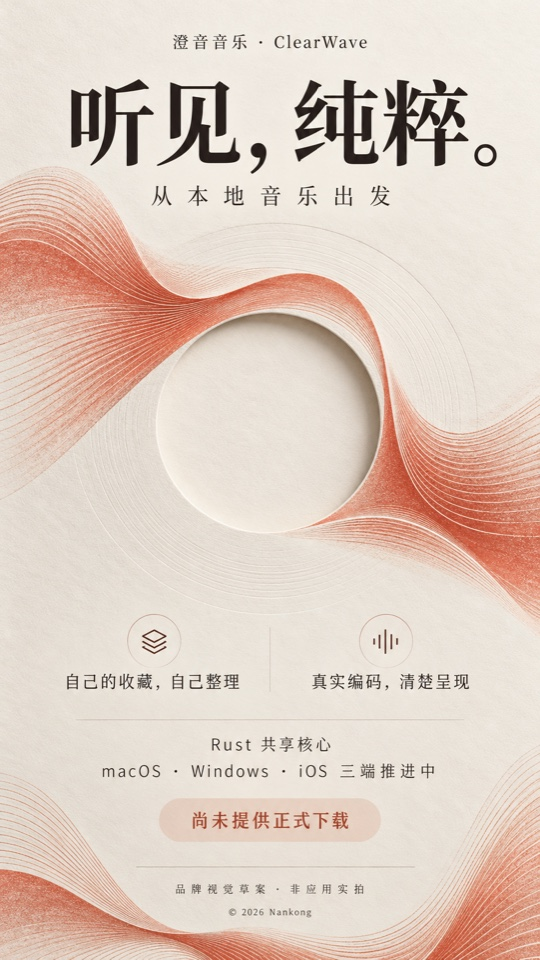

音乐库 / 歌单
收藏，不止一个列表。
导入自己的音频，用搜索与收藏找回喜欢的声音。创建本地歌单，编辑顺序；歌单和正在播放的队列分开管理。
本地歌单不是云同步歌单。开发预览 · 暂无正式下载
从本地音乐出发，
连接更多有权播放的声音。
把喜欢的声音整理成自己的顺序。播放、收藏、看歌词，也看清音乐的来源与实际编码。
Rust 共享核心 · 原生平台界面
macOS / Windows / iOS 是交付目标，不是已上线承诺。

自己的音乐，各有归处。
以下能力已在 iOS / iPadOS 开发候选中实现并有工程验证记录；不代表真机、三端等价或最终发行验收。
音乐库 / 歌单
导入自己的音频，用搜索与收藏找回喜欢的声音。创建本地歌单，编辑顺序；歌单和正在播放的队列分开管理。
本地歌单不是云同步歌单。播放 / 队列
顺序、列表循环、单曲循环与随机播放。调整队列、插入下一首；清空队列不会删除音乐库。
实体设备的后台、中断与音频输出仍待验证。歌词 / 进度
导入或粘贴自己的 LRC，随播放时钟高亮，点按歌词定位。拖动进度时先预览，松手后提交位置。
本地逐行歌词；不承诺在线或逐字歌词覆盖。来源 / 编码
读取实际音频信息，区分 FLAC、WAV、ALAC、MP3 等编码和来源。在线适配按来源展示结果与错误。
编码信息不等于母带真实性、播放权或 bit-perfect 输出。发布状态 / 2026-10-28
还没有可供公众安装的最终版本。这里不会用模拟器包或未经目标系统验证的构建充当下载。
MACOS
Mac Catalyst 0.1.0 / build 2 已在开发机安装，arm64 / macOS 14 起。开发记录已验证文件选择导入、播放/暂停、进度、队列、歌单和正常退出重开；这仍是本机候选，不是最终公开发行。
尚未开放下载
WINDOWS
Rust / egui 本地播放器已交叉构建出 x64 Release EXE。尚未在真实 Windows 验证界面、安装与运行；运行时依赖和分发许可仍需闭合，不能当作已可用的单文件安装包。
尚未开放下载
IOS / IPADOS
现有设备架构构建未签名，模拟器记录不能替代真机安装。没有 App Store / TestFlight 公开入口。
尚未开放下载
当前公有仓库只包含本站、宣传草案及公众状态，不是完整 App 源码。真正候选冻结并通过对应检查后，才同步完整源码、版本标签、安装包和最终哈希。软件许可尚未选定，不因可见源码就自动授予 MIT 等开源许可。
查看公有项目与当前范围 ↗ · 机器可读发布状态 ↗关于这份介绍
本页海报是原创 AI 视觉草案，仍待确认；不是正在运行的软件截图。最终实操片将绑定同一待发布候选，使用脱敏实际录屏与有权使用的音频，不以概念动画代替操作。
现在尚无最终演示视频，故不放假播放器或旧版录屏。iPad 自动化有未闭合的间歇性动画等待问题，不能称全部稳定性验收已完成。
下载网页海报草案 ↓不是。澄音是独立音乐播放器候选，与网易云及各来源平台无官方合作或背书关系，不复制其商标、专有代码或歌曲资产。
没有。Mac 适配、Windows 交付及 iOS 签名/真机验证分别推进；现阶段不能从本站下载安装正式 App。
不是。共享核心使用 Rust；当前 Apple 平台界面与音频输出使用 SwiftUI / AVFoundation。原生薄层和各平台能力需要分别验证。
尚未公布最终软件使用许可与发行条款。本站是免费访问的静态介绍页，不收款、不售卖音乐；第三方来源的授权、访问条件或费用独立适用。